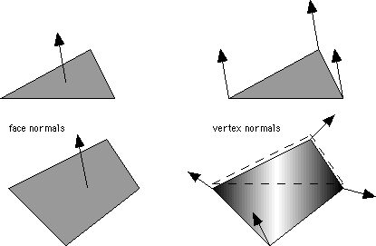
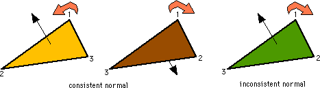
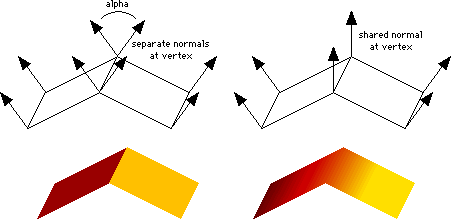

A normal is a vector that describes the orientation of a surface at a given point. The normal is perpendicular to the surface's tangential plane at the given point.
On a smoothly curved surface, the normal direction changes continuously from point to point.
On a plane, all normals point in the same direction (parallel).
Front and Back Faces
The normal direction indicates the 'front face' of a surface or polygon. The front face is visible if the normal points towards the viewer. The opposite side of the polygon is the 'back face'.
Shading algorithms can render only the front faces (to save time), or can also render both faces (two-sided shading).
Culling completely removes polygons that face the viewer with their back faces.
Face Normals and Vertex Normals
A face normal indicates the average orientation of a polygon.
Triangles are always planar and have a constant orientation. Any n-sided polygon with n>3 can be nonplanar (twisted).
A vertex normal indicates the surface orientation at the vertex of a polygon.

Face normals
- are usually calculated as the average of all vertex normals of a polygon
- are used as indicators for single-sided shading, flat shading, culling ..
Vertex normals
- can be provided as part of the geometry (and may be calculated from an analytical surface description)
- if not provided, are derived from the triangular plane defined by the two edges that meet at the vertex
- are used in Gouraud, Phong, and other shading algorithms
Vertex Ordering and Normal Direction
The sequence in which polygon vertices are defined (ordering) can be used to determine back and front face of a polygon and direction of normals.
Default: front face is visible if vertices appear in counterclockwise order. Normal should point towards viewer.
Normals provided with geometry should be consistent with vertex ordering (otherwise undesirable rendering results).

If normals are not provided, vertex ordering determines the direction of normals and should be consistent throughout.
Shared Vertex Normals and Smooth Shading
Smooth surfaces are approximated by a mesh of polygons. Shading results are discontinuous across polygon edges.
Shared vertex normals average the surface's orientation at a given vertex and combine the face or vertex normals from all polygons that meet at the vertex.
Result: continuous shading across polygon edges.
Control parameter for automatic smooth shading: crease angle

VRML: The field creaseAngle (e.g., in the IndexedFaceSet node) specifies a tolerance angle. If the angle between the separate normals (alpha) is less or equal the value specified in creaseAngle, a shared normal will be used and smooth shading across the edge will be applied.
Note the excellent result (smooth shading) for the cylinders
and the slightly poorer result for the sphere
caused by a polygon mesh that requires a larger crease angle.